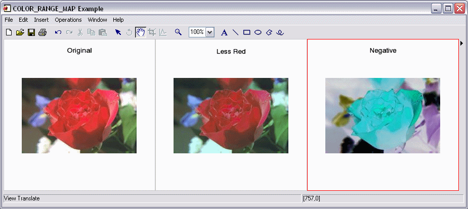

The COLOR_RANGE_MAP function maps all the pixels of an image to another set of pixels, using source and target ranges to control the mapping. The mapping is performed on each image channel individually. Channel values falling within the source range are linearly mapped to the target range. The same linear mapping is applied to channel values falling outside the source range, and these values are clipped to the range of the image’s data type.
Result = COLOR_RANGE_MAP( Image , FromColor1 , FromColor2 , ToColor1 , ToColor2 )
Result is an array of the same dimensions and type as Image .
A 2D or 3D array of any basic type containing the input image. 2D arrays are treated as one-channel images. 3D arrays must be of the form [ N x n x m ] where N is the number of image channels.
An N -element vector that specifies the starting color in the source range, where N is the number of channels.
An N -element vector that specifies the ending color in the source range, where N is the number of channels.
An N -element vector that specifies the starting color in the target range, where N is the number of channels.
An N -element vector that specifies the ending color in the target range, where N is the number of channels.
None
In this example, COLOR_RANGE_MAP will tone down the first (red) channel in an image and make a negative of an image:
; Read a TrueColor image:
file = FILEPATH('rose.jpg', SUBDIRECTORY = ['examples', 'data'])
IOPEN, file, rose1
; Tone down the first (red) channel in the image:
rose2 = COLOR_RANGE_MAP(rose1, [0,0,0], [255,255,255], [0,0,0],$
[200,255,255])
; Make a negative of the rose image:
rose3 = COLOR_RANGE_MAP(rose1, [0,0,0], [255,255,255],$
[255,255,255], [0,0,0])
IIMAGE, rose1, VIEW_GRID=[3,1], VIEW_TITLE='Original', $
DIMENSIONS=[900,300], WINDOW_TITLE='COLOR_RANGE_MAP Example', $
/NO_SAVEPROMPT
IIMAGE, rose2, /VIEW_NEXT, VIEW_TITLE='Less Red'
IIMAGE, rose3, /VIEW_NEXT, VIEW_TITLE='Negative'
; Increase the text size
ISETPROPERTY, 'text*', FONT_SIZE=40
|
 |
|
6.4 |
Introduced |